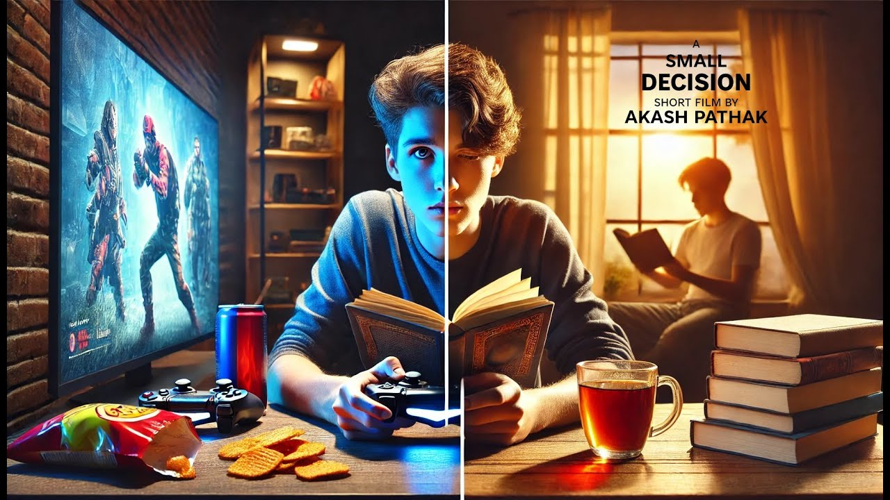
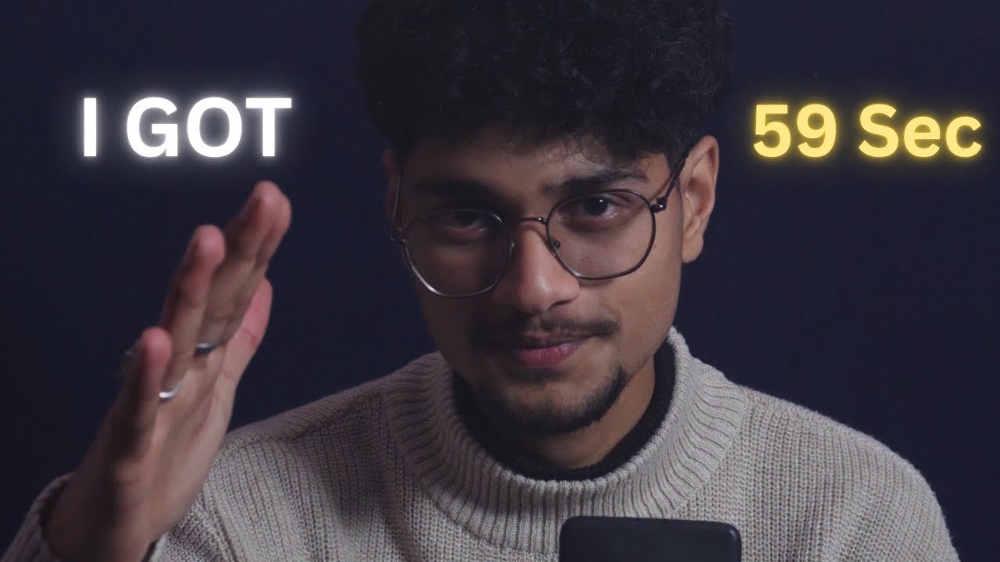

Project Highlights
Explore my best editorial reels, graded sequences, commercial projects, and short films. Tap any highlight card for high-resolution specs, tools applied, and real-time theater playbacks.

5:22A Small Decision | Short film by Akash Pathak
A compelling and emotionally resonant short film exploring pivotal moments and life choices. Directed and crafted with a meticulous visual style, custom pacing, and highly atmospheric sound design that enhances the storytelling experience.
The Last Night | Short Film |
A tense, beautifully styled narrative piece capturing intimate late-night conversations and high-contrast cinematographic moods. Balanced with realistic artificial light leaks, subtle audio layering, and smooth dialogue pacing.

0:59Give me 59 seconds.. I'll intoduce myself
A highly dynamic, fast-paced cinematic introduction of the creator, designed to hook the audience instantly. Combines split-screen arrangements, kinetic title transitions, and professional rhythm-driven sound effects.

About Akash Pathak
Hi, I'm Akash Pathak, a 21-year-old passionate video editor and cinematographer. I am an enthusiastic creator who loves making content, doing filmmaking, and bringing engaging stories to life. With a sharp eye for pacing, framing, and soundscapes, I craft compelling visual journeys from raw footage. Always exploring new horizons behind the lens and in the editing suite.
Post-Production Mastery
Color Science
Expertise in color matching multi-cam shoots, creating custom look-up tables (LUTs), HDR grading, and tone mapping for diverse displays.
Narrative Pacing & Storytelling
Crafting compelling story arcs out of hours of footage. Understanding when to let a scene breathe vs. maintaining relentless momentum.
Sound Design & Spatial Audio
Layering sound effects, ambiance, foley, and score mixing to construct fully immersive spatial audio fields that enhance visual triggers.